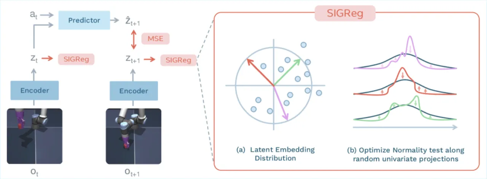
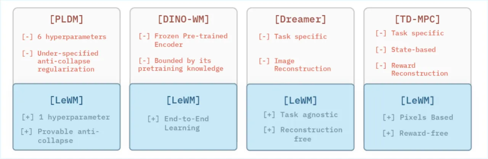
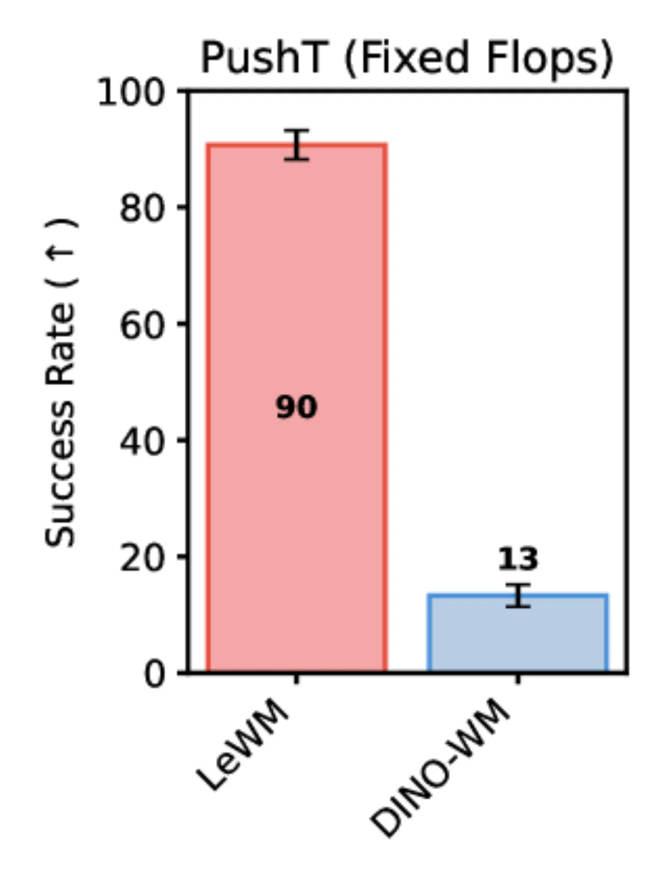
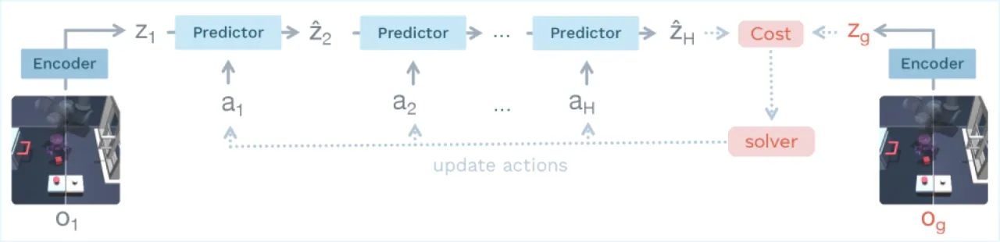

LeWorldModel (LeWM) 提出了一种极简的 Joint Embedding Predictive Architecture (JEPA) 训练方案：仅需预测损失与 SIGReg 正则化两项，无需动量编码器、多任务辅助损失或预训练特征，即可在单张 GPU 上数小时内从原始像素稳定收敛。LeWM 在多个控制任务上达到与基于 DINO 基础模型的方法相当的表现，同时规划速度快 48×。
训练 Joint Embedding Predictive Architecture (JEPA) 的核心难题是表征坍塌（representation collapse）：若不加约束，编码器会将所有输入映射到同一点或低秩流形，预测误差趋零但表征毫无意义。现有方案须依赖复杂的多项损失、指数移动平均（EMA）目标网络、预训练编码器或辅助监督，工程复杂度高且超参数众多。
"Existing methods for training JEPAs from pixels rely on complex multi-term losses, exponential moving averages, pre-trained encoders, or auxiliary supervision."


LeWM 由一个轻量级 Vision Transformer 编码器和一个带 Adaptive Layer Normalization 动作注入的 Transformer 预测器组成，以两项损失端到端训练：预测损失（ℒpred） + SIGReg 正则化，无需 EMA 目标网络或预训练特征。规划阶段采用 Cross-Entropy Method (CEM) + Model Predictive Control (MPC)。

编码器采用 Vision Transformer Tiny，约 5M 参数（12 层、3 个 attention head、192 维 hidden，14 像素 patch），[CLS] token 经过单层 MLP + Batch Normalization 投影至潜在向量。预测器为 6 层 Transformer（16 个 attention head、10% dropout，约 10M 参数），动作通过 Adaptive Layer Normalization 在每层注入，初始化为零以保证训练初期稳定性。
对下一帧嵌入的均方误差：
ℒpred ≜ ‖ẑt+1 − zt+1‖²₂
其中 ẑt+1 为预测器输出，zt+1 为编码器对真实下一帧的输出。
基于 Epps–Pulley 统计检验，对 M=1024 个随机投影方向逐一检验潜在表征是否服从高斯分布，并将偏差作为正则化损失：
ℒLeWM ≜ ℒpred + λ · SIGReg(Z)
默认 λ=0.1，是整个方法唯一需要调整的超参数（PLDM 需调 6 个）。
实验在四个离线、无奖励的控制环境中评估：Push-T（2D 操作）、OGBench-Cube（3D 机器人）、Two-Room（2D 导航）、Reacher（运动规划）。基线包括端到端方法 PLDM 和基于 DINO 基础模型的 DINO-WM。

| 评估维度 | PLDM | DINO-WM | LeWM（本文） |
|---|---|---|---|
| PushT 成功率 | 基准 | 相当 | 高出 PLDM 18% |
| 规划时间 | — | 较慢 | 比 DINO-WM 快 48× |
| 损失项数量 | 7 | N/A（冻结编码器） | 2 |
| Block Location MSE（Push-T） | 0.011±0.066 | 0.009±0.052 | 0.001±0.006 |
| 训练损失曲线 | 嘈杂、非单调 | — | 平滑、单调收敛 |
论文通过两项实验验证 LeWM 是否学习了物理先验：
实验表明：SIGReg 的投影数量 M 对性能影响可忽略；嵌入维度超过某阈值后性能饱和；用 ResNet-18 替换 ViT 编码器仍能获得有竞争力的结果。整个方法仅 λ 需要调整，可通过 O(log n) 的二分搜索确定（PLDM 需 O(n⁶) 网格搜索）。
"Planning remains restricted to short horizons, motivating hierarchical world modeling for long-horizon reasoning." 论文指出当前方法仅能在短时间步内有效规划，长程任务需要分层世界模型。
在 Two-Room 等内在维度较低的环境中，SIGReg 难以将低维数据的潜在分布对齐至高维各向同性高斯，导致性能相对下降。
方法依赖具有充分覆盖率且包含动作标签的离线数据集。未来工作提出预训练于大规模视频数据并引入逆动力学建模，以减少这一约束。
由图 7 可见，重建的 OGBench-Cube 序列保留了场景全局结构但细节模糊，说明潜在空间是有损压缩，精细操作任务中的像素级精度可能不足（论文未明确讨论此局限）。